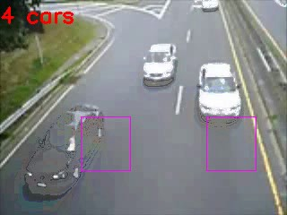
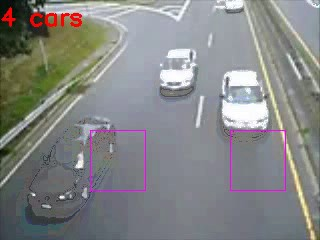

Surabhi Gaopande

Statistical approach for distance estimation using Inverse Perspective Mapping on embedded platform
Remote object Distance Estimation with applications in Driving Assisstance, Navigation, Location and Positioning
A mono vision distance estimation algorithm which can be used for various applications such as obstacle avoidance in case of an autonomous slow moving vehicle (ASMV) has been devised.The system uses a single camera fixed at a stationary position to capture the real time image of target object and determine its distance in contrast to existing and most common vision algorithms of stereo vision. The image captured from a single forward facing camera suffers from high degree of uncertainty in object distance estimation due to the nonlinear relation between object height and its actual distance from camera. This uncertainty is eliminated by using Inverse Perspective Mapping to translate the front view captured by the photosensitive sensor to a bird's eye view. The practical implementation has been carried out on Beagleboard-xM which is ARM-processor based open source single board computer chosen for its low cost, low power requirements and multitude of USB ports for extended peripherals. The accurate estimation of the distance of the obstacle from camera position was determined using statistical analysis.An accuracy of about 90 % was achieved. The results obtained with statistical approach enhance the performance of the system and make it ideal for real time processing of closed loop obstacle avoidance control mechanism of an ASMV. The accuracy achieved is very high and nearly equals that obtained by stereo vision mechanism. The added advantage of the proposed algorithm is that no prior information is needed about the object to be detected and calibration needs to be just once during system installation for distance estimation for a particular environment. The algorithm also takes care of non-ideal behavior of the camera lens and tries to eliminate it by carrying out un-distortion. The adaptive thresholding mechanism eliminates need of a fixed threshold value, thereby addressing an important problem of most of the thresholding algorithms used in image processing. Considering the multiple constraints of mono-vision distance estimation approach, the proposed algorithm can be thought as a low cost and efficient solution to the problem.


Publication
Statistical approach for distance estimation using Inverse Perspective Mapping on embedded platform
Robust and Adaptive Traffic Surveillance System for
Urban Intersections on Embedded Platform
A reliable traffic flow monitoring and traffic analysis approach using computer vision.
The project presents a real time traffic monitoring
system that makes use of image processing algorithm to detect and
estimate the of count of vehicles using motion detection approach.
Traffic congestion is a serious issue, which is the root cause of a
series of serious problems. Conventional traffic light controllers
have limitations because they make use of the predefined
hardware, whose functioning is governed according to program
that does not have the flexibility of modification on real time basis.
The proposed system makes use of a differential algorithm in
order to determine the signaling duration of each lane of
intersection. The system provides different delays for different
junctions thus optimizing the waiting time of each user. This
flexibility of timing and controlling prevents the congestion of
vehicles in squares due to high waiting time for the green ligh.
The proposed system guarantees a high success rate for
minimizing the traffic density at heavily crowded urban
Intersections. Currently, in absence of automated signal control
techniques, the traffic lights are either statically calibrated, or
controlled by on-road policemen, or remotely controlled by
manually seeing video feeds at the traffic control room. In such
a situation, the proposed algorithm ensures adaptive and robust
monitoring on a real time basis. The system can be installed for
N joints intersection, multi-lane traffic flow and can be
integrated as a part of a holistic traffic safety system. Very few
measurements are required, since most of the work is
computational.The hardware implementation has been carried out on
ATxmega256A3U. This system is robust and it is least affected by
disturbances and inaccuracy in measurement. The future scope
of the paper includes implementation of image processing
algorithm on an embedded platform. This will help in faster
processing and reducing power consumption.
 

Publication
Robust and Adaptive Traffic Surveillance System for
Urban Intersections on Embedded Platform
DTMF based Home Automation System
A reliable traffic flow monitoring and traffic analysis approach using computer vision.
Traditionally electrical appliances in a home are controlled via switches that regulate the
electricity to these devices.Home automation is becoming more and
more popular around the world and is becoming a common practice. The process of home automation
works by making everything in the house automatically controlled using technology to control and do the
jobs that we would normally do manually.
In this project , a unique System for Home automation utilizing Dual Tone Multi Frequency (DTMF) is proposed.It is is
paired with a wireless module to provide seamless wireless control over many devices in a house.
This user console has many keys,each corresponding to the device that needs to be activated.
The user can remotely perform status check of each appliance like the Air Conditioner, Water Control Motor etc
and chnage the status. A voice feedback circuit guides the user to receiver acknowledgements of his actions.
The prototype was implemented using Atmega Microcontroller,DTMF Decoder circuit,Voice playback circuit and sensors and the circuit was fabricated on pcb.


Traffic Monitoring at Chaotic Urban Intersections
Analysis and Monitoring of a High Density Traffic Flow at T-Intersection Using Statistical Computer Vision Based Approach
A reliable traffic flow monitoring and traffic analysis
approach using computer vision techniques has been proposed
in this work. The exponential increase in traffic density at
urban intersections in the past few decades has raised precious
and challenging demands to computer vision algorithms and
technological solutions. The focus of this algorithm is to suggest a
statistical based approach to determine the traffic parameters
at heavily crowded urban intersections. The algorithm in
addition to accurate tracking and counting of freeway traffic
also offers high efficiency for determining vehicle count at a
high traffic density T-intersection. The system uses Intel Open
CV library for image processing. The implementation of
algorithm is done using C++. The real time video sequence is
obtained from a stationary camera placed atop a high building
overlooking the particular T intersection. The work suggests a
dynamic method where each vehicle at a T intersection is
passed through a number of detection zones and the final count
of vehicles is derived from a statistical equation. The practical implementation of the algorithm
achieves an accuracy upto 92%.

LOWFER Software defined Radio using Tayloe Quadrature Sampling Detector
In this work,the aim was to design an architecture for optimum performance in the LOWFER spectrum using software defined radios.
This led to the development of a low cost receiver for LowFER using Tayloe QSD for down conversion of the received RF Frequency instead of a traditional
homodyne/superheterodyne mixer. The design uses a direct conversion process that can be used for up conversion as well as down conversion.Using locally available off-the-shelf components, the
design was successfully implemented at the breadboard level, and interfaced with PC through PC soundcard.
GNU Radio used for processing of received I and Q samples, with function generators used for generating
the incoming RF and local oscillator signals. The project gave an insight into the world of software defined radio
and the challenges associated with hardware realization.The design required several iterations to get all the
blocks to work perfectly. Issues like non-availability of components mismatch and burnouts were faced in plenty.
Setting up the GNU radio environment and interfacing with the I and Q signals was an iterative process too.


Joint Collaboration with Wireless @ VT Collegues.
Analysis and Study of Femtocells in Cellular Networks
The Internet of Things ecosystem where every object is acting as node that transmits and receives data at every moment to be a part of
an interconnected ecosystem puts tremendous stress on the existing wireless technology. This shifts the focus
of existing wireless technology to deploy more cells that provide indoor ubiquitous mobile broadband coverage at higher
data rate along with excellent voice service. Femtocells belogn to this class of devices that operate on low power,
provide easy service to the home based equipmentssuch as laptops, notepads, cell phones and ensure high data rates and
coverages. These home basestations are deployed on ad hoc base stations
and introduce major changes in the modeling ofsuch heterogeneous systems in terms of anaThe project aims to analyze the role of femtocells in thecurrent network architecture,
the strategies that ensure their optimum performance in presenceof interference and study the cost effective solutions.
It is concluded that intelligent spectrum access policies includingthe hybrid access can yield
rich results to curb interfernce.The real time system model wasdeveloped by using tools of stochastic
geometry and the access mechanism was studied indetail. The impact of femtocells was studied through
simulations by analysing the metric of coverage
probability and the importance of decoupling of uplink and downlink was stressed.

Analysis and Stochastic Modelling of Interference Patterns for Cellular Networks
A power optimal strategy for machine to machine communication!
The Internet of things envisages to create a plethora of heterogeneous objects and machines interconnected to each other to form a global system of systems that will ease and simplify the human tasks in countless ways. The possibility of every object acting as node that transmits and receives data at every moment to be a part of an interconnected ecosystem puts tremendous stress on the existing wireless technology. This shifts the focus of existing wireless technology to model the flow of data from human generated type to the machine generated traffic. Considering that most of the machines transmit majority of data on the uplink and conditioned on their inaccessible and remote locations, the metrics for their efficient performance demand a change in the existing architectures. Power efficient and self-sustaining systems will guarantee optimum performance in the IoT environment. The translation of every device into a transmitting node will also introduce tremendous interference in the system and modelling the performance of such an in presence of interference is of utmost importance.
Considering the spatial distribution of such devices will no longer be regular, the tools of stochastic geometry are exploited to model the interference and the impact on the various nodes in presence of the different strategies employed for the system like CDMA or FDMA. The project thus aims to analyze the strategies that ensure the optimum performance of machine to machine communication in presence of interference and derive values for certain key metrics. On the lines of this approach, the focus is to further develop a unified framework for modelling all the key performance metrics in presence of interference and ensure optimum performance of the IoT system.